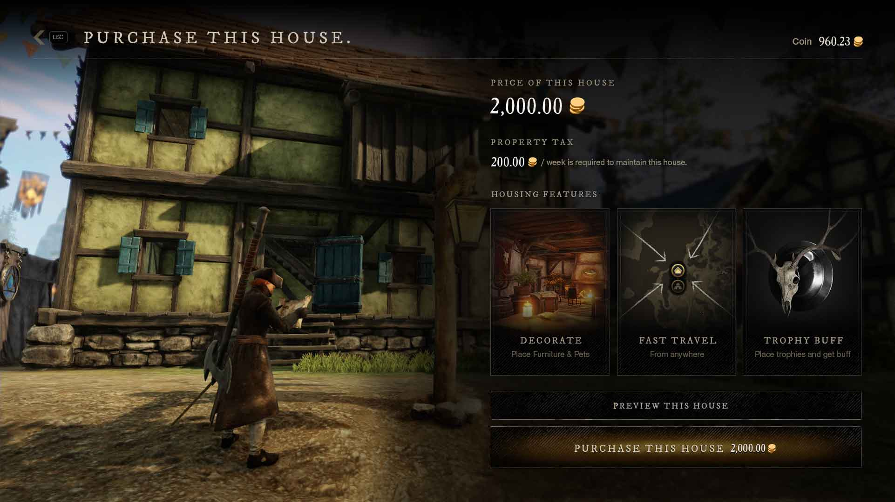
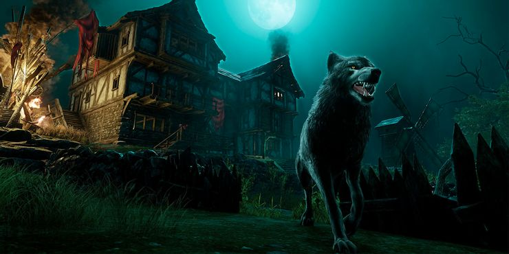
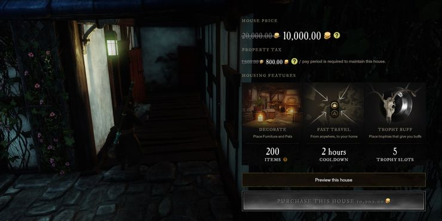
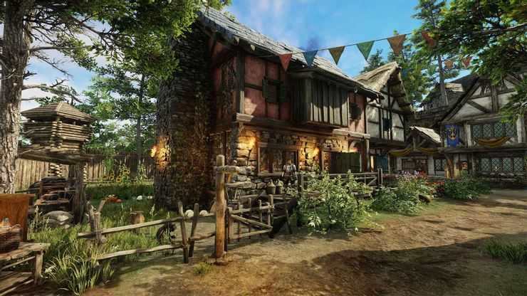
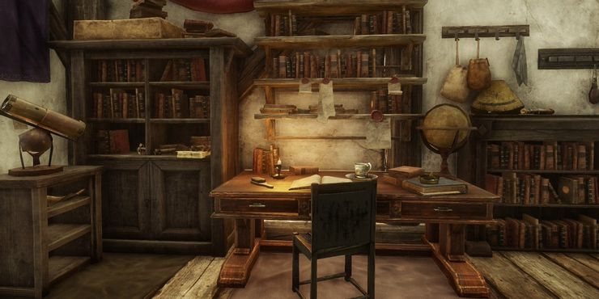

Новий світ: повний посібник із житла
Володіння будинком дає вам більше місця для зберігання, безкоштовну точку швидкого подорожі тощо.
Володіти будинком у New World трохи складніше, ніж в інших MMO. Вам потрібно буде розблокувати можливість придбати будинок, мати необхідні монети, щоб купити його, а потім мати достатньо монет, щоб сплачувати щотижневий податок на нерухомість. Такий рівень інвестицій утримував багатьох гравців від покупки будинку, і це ганьба.
Які переваги володіння будинком?
Володіння будинком у Новому Світі дає набагато більше переваг, ніж місце, яке можна назвати своїм. Поки у вас є будинок, ви можете:
- Швидкий доїзд додому безкоштовно кожні 2-4 години.
- Показуйте трофеї, надаючи пасивні переваги, які працюють у кожному регіоні.
- Збільште свій обсяг зберігання в даному населеному пункті.
Якщо вам набридло використовувати Azoth для швидких подорожей, вам варто серйозно подумати про придбання будинку в населеному пункті, який ви часто відвідуєте. Ви можете володіти до трьох будинків у Новому Світі, тому добре подумайте, у яких населених пунктах ви купуєте нерухомість.
Також не приховуйте трофеї чи сховище. Трофеї забезпечують пасивні бафи, які працюють у кожній зоні, незалежно від того, чи є у вас власність чи ні. І коли ви потрапите в фінал Нового Світу, вам знадобиться якомога більше місця для зберігання матеріалів для рукоділля , яке ви можете збільшити, придбавши будинок.
Придбання будинку
Щоб придбати будинок, ви повинні мати територію від десяти або вище. Коли ви досягнете десятого рівня в певному регіоні, ви будете змушені отримати нагороду «Власність будинком», що дозволить вам придбати нерухомість у цій зоні. Звідти вирушайте до поселення, щоб знайти будь-які будинки, які можуть вас зацікавити.
Коли ви знайшли будинок, який вам подобається, натисніть «T», перебуваючи біля нього, щоб відкрити меню покупок. Він розповість вам про переваги, які ви можете очікувати від володіння будинком, і скільки це коштує. У вас є 50% знижка на перший будинок, який ви купуєте , тому подумайте про те, щоб почекати, доки ви зможете придбати будинок T4, перш ніж вкладати гроші в нерухомість.
Рівні будинку та переваги
Як і більшість речей у Новому Світі, будинки поділені на різні яруси. Збільшення вашого територіального статусу дозволить вам купувати житло вищих рівнів, а вищі рівні надають більше переваг. Рівні дому та переваги розподілені таким чином (заслуга New World Fandom Wiki за таку інформацію)
Податок на власність
Так, ви правильно прочитали: у New World є механік податку на нерухомість. Раз на тиждень вам потрібно буде сплачувати невелику плату, щоб зберегти переваги вашого будинку . Якщо ви не сплатите цю комісію, усі допоміжні переваги, пов’язані з будинком — трофеї, додаткове сховище та можливість швидко подорожувати — будуть відключені, доки ви не заплатите. Ви все ще будете власником свого будинку, якщо не сплатите податок на нерухомість.
На щастя, у Новому Світі легко розрахувати свій податок на нерухомість. Кожен будинок має основну ставку, яка визначається рівнем вашого будинку. Для будинків T1 стягується податок у розмірі 400 монет, а для будинків T4 — 1600 монет. Цей принципал можна змінити двома речами:
- Територія Стоячі знижки
- Управителі поселення
Існує Територія Постійної картки під назвою «Податок на майно», яка значно зменшує цей збір. Взявши кілька таких карток, ви можете отримати знижку 15-20% на цей щотижневий податок.
Якщо ваше поселення належить Компанії, члени високого рангу, які називаються губернаторами , можуть регулювати ставку податку на майно регіону. Уряди можуть регулювати ставку податку на майно в діапазоні 5-20%. 5% — низька ставка податку, 10% — помірна і вважається стандартною, а 20% — висока ставка податку. Якщо жодна компанія не володіє або не змінює поселення, ваша ставка податку становитиме 10% (вартість, указана під час першого придбання будинку).
Трофеї та меблі
Податок на майно в основному існує для того, щоб компенсувати вартість домашніх трофеїв і меблів. У кожному будинку в Новому Світі можна розмістити різну кількість меблів і до п’яти трофеїв. Меблі можна використовувати для значного збільшення розміру вашого сховища, а Трофеї можна використовувати для отримання пасивних переваг, які впливають на вас у кожній зоні.
Трофеї
Трофеї — це косметичні засоби, які ви можете розміщувати у своєму домі, які надають пасивні переваги вашому персонажу , починаючи від додаткової шкоди Lost і закінчуючи збільшенням удачі під час збирання врожаю чи створення. Ви можете мати п’ять активних трофеїв у певному домі. Хоча ви не можете скласти один і той самий трофей в одному будинку, ви можете скласти той самий трофей у кількох будинках . Наприклад, ви не можете розмістити три гірничі трофеї в одному будинку, але ви можете розмістити один гірничий трофей у трьох різних будинках.
Скрині для зберігання
У вашому домі може міститися певна кількість скринь, пов’язаних із зберіганням, кожна з яких збільшує вашу ємність для цього поселення. Це величезне збільшення обсягу пам’яті, що дозволяє подвоїти ліміт пам’яті без урахування карток Території . Рівень вашого будинку визначає, скільки скринь ви можете розмістити у своєму будинку. У будинку T4 ви зможете розмістити чотири скрині одночасно.